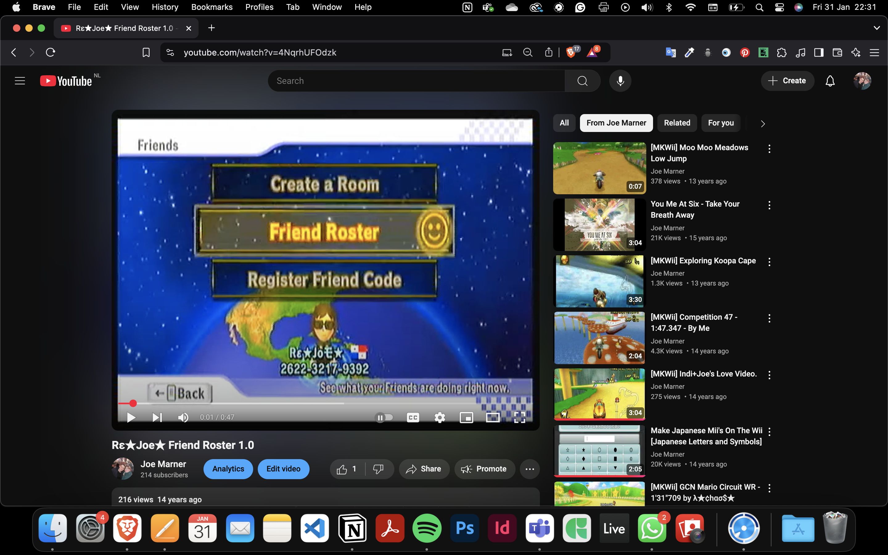
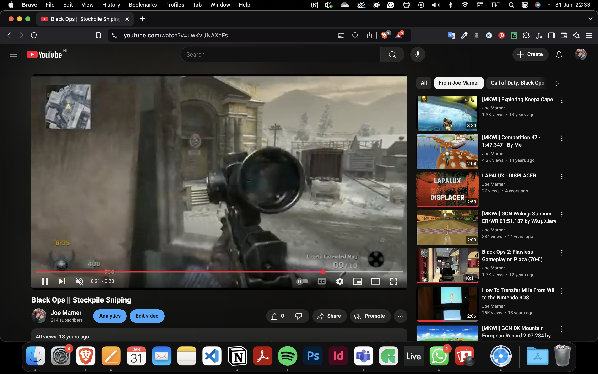
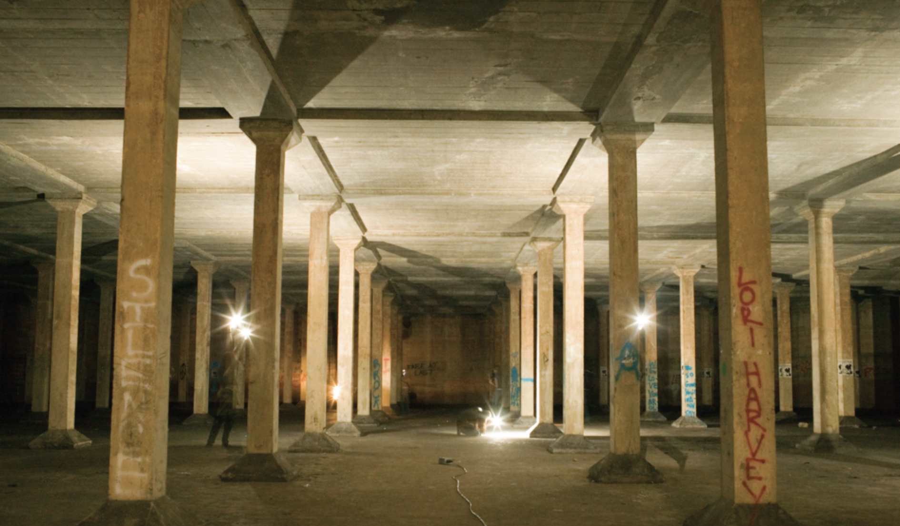
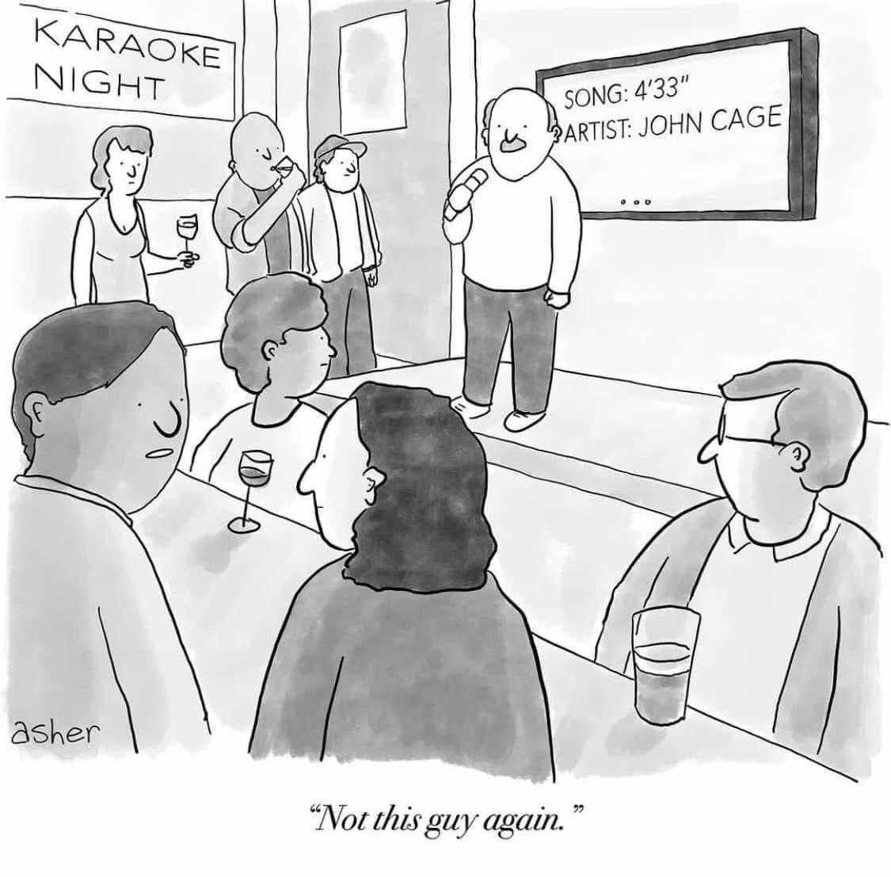
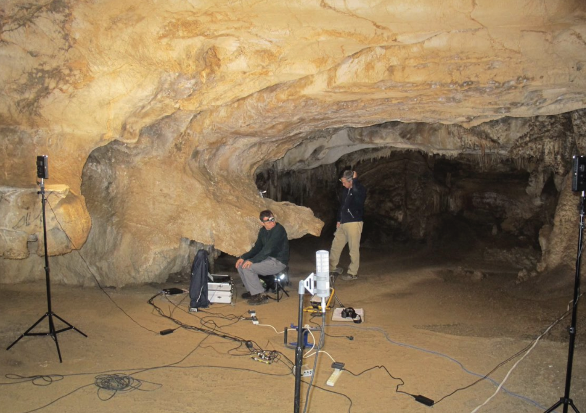
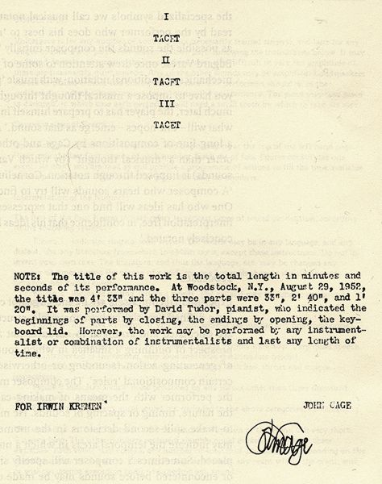
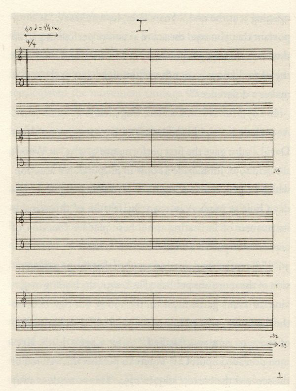
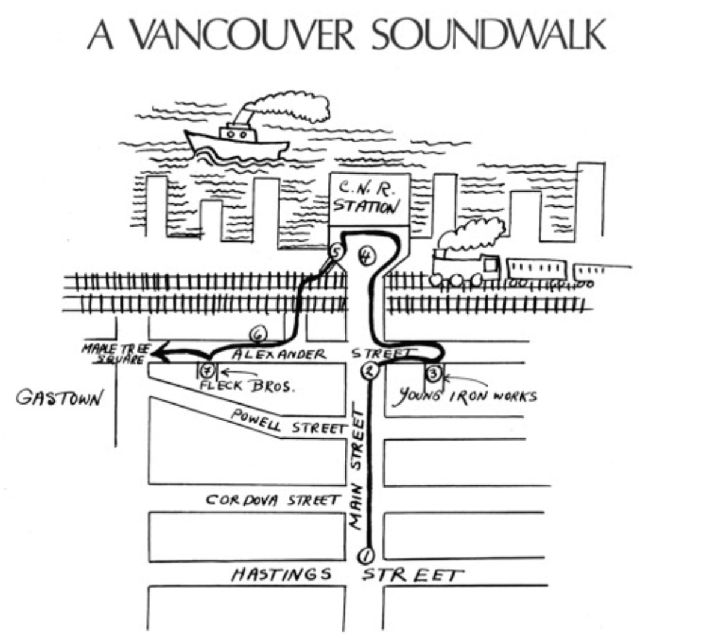
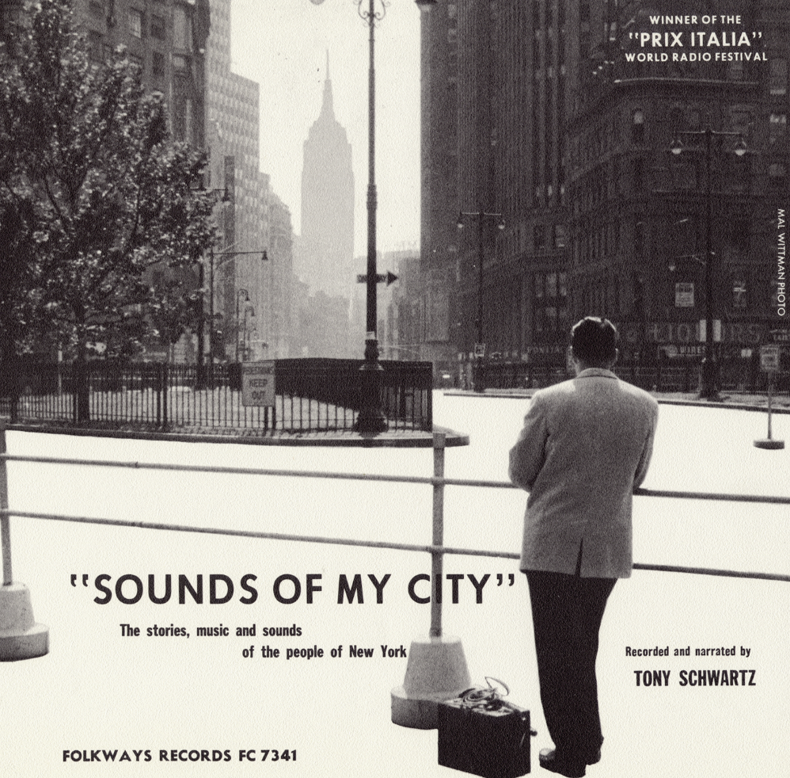

Abstract
By solely focusing on the auditory elements of the videos, new layers of meaning emerge. What do the background noises in these videos uploaded to YouTube many years ago tell us about the environments they were recorded in? What stories can these sounds tell when revisited and reused? How can we reinterpret sound to uncover new meanings? Drawing from sound studies theorists like R. Murray Schaefer, Michael Bull, Pauline Oliveros, and more, this research puts YouTube as an evolving sonic archive, where private moments become collective memories.
Through experimental listening techniques, this study seeks to transform forgotten sounds on YouTube, henceforth known as the YouTube Graveyard, into living soundscapes, demonstrating that even the most ordinary recordings hold the potential to tell profound stories about modern life and memory.
Introduction
I grew up in a small village called Drimoleague, located 73km away from the nearest City, Cork. Drimoleague is home to 486 people. When we moved into my family house in 2001, my parents found a sign at the bottom of the driveway. It was quite an old sign and was tucked in beneath overgrown grass. “Unart”, was written on the sign. I can’t remember what it meant exactly, but I do remember it meaning something along the lines of The Windmill House. So became the name of our house; surrounded by beautiful mountains and trees, and twelve windmills. The area was quiet, the occasional sound of wind, birds and the sounds of chickens, ducks, donkeys and geese. “Come on then”, I used to shout to the chickens and ducks to come into their pen for dinner, mimicking my grandad, who used to do it too. After a while he got too old and sick, so I started to take care of the chickens and ducks more. The sounds that would come from inside my house stick out to me, particularly the staircase and the hallway. It would make a really special creaking noise if walked on it with one foot while crossing from the bathroom to the hallway where we had our computer. I also remember the sound of a car driving up the drive, its wheels crushing the stones in certain ways which caused a cracking sound. This was usually heard from inside my bedroom where I spent a lot of time playing video games and watching YouTube videos. My home in Drimoleague
My home in Drimoleague
I have always listened to the environment around me. Listening to the sounds of cities I have lived in, the sounds of objects when I touch them a certain way, or when I scrape them on another object. I always thought it was a bit weird if I brought it up with anyone, so I kept my interest in the back of my mind, occasionally coming out to friends. It wasn’t until 2022 when I did a class on Sounding, guided by Femke Dekker, when I was introduced to concepts such as experimental listening, field recordings and soundwalks which was when my mind sort of switched. This is a real thing people do. People listen intensely, all the while trying to understand the world around them that bit more. I also wanted to do it.
Computers and digital media has been a part of my life for a long time. When I was 9 or 10, I joined my first fan forum which was dedicated to The Sprouse twins. When I was 12 through 15, I ran my own blog called Disneyupdates1.blogspot.com, where I posted links to download new TV shows and movies that premiered on Disney Channel and Nickelodeon. It got so big that it reached 10,000 unique visitors a day. When I was 18, I played Mario Kart Wii competitively and became an administrator on Mariokartwii.com, making friends from all over the world, some of which I have met up with a few times in London. I also uploaded videos on YouTube of myself and friends playing Mario Kart Wii together, soon changing to Call of Duty videos once we all got a bit older.

My Mario Kart Wi Friend Roster

Me playing Call of Duty
I used to love being on Skype with my online friends from different countries; hearing people’s accents and sometimes the sound from outside of their houses. It sounded the same as my life but also sounded different. It was hundreds if not thousands of miles away from me. In 2022, I started recording sounds using a Zoom H2n, bought for me as a birthday present by my partner and friends. I also started finding sounds from old videos on YouTube, always searching “2000’s” or “2010’s”. I loved the old school, grainy effect to the sounds. Sometimes they felt nostalgic to me, as if it was my own sound. I drew these correlations in my mind between my life and theirs. At the start of this research, I came across “IMG_0001” videos on YouTube which were always uploaded around 14 years ago. I enjoyed the sounds of these videos a lot. I wondered what could be done with these sounds. Should they live in the YouTube Graveyard forever, sometimes only receiving 2 views? Why did I find this sad? Are these sounds worthy of 2 listens in 14 years? These are someone’s childhood, their family, the environment that shaped them, their memories.
What stories can these sounds tell when revisited and reused?
How can we reinterpret sound to uncover new meanings?
How can we reinterpret sound to uncover new meanings?
The Sonic Life of Home videos
Before the rise of social media platforms such as TikTok, Instagram, and Facebook, Apple’s iPhone and iPod Touch had a special feature called “Upload to YouTube”, which let users upload videos to YouTube with a click of a button. This feature began in 2009 and only lasted a few years. Many of these videos were titled “IMG_0001”, “IMG_0003”, “IMG_4931”, etc. This “Upload to YouTube” feature generated millions of uploads to YouTube, which prompted an explosion of self-documented videos, now living in what I like to call The YouTube Graveyard, where the videos slowly go to die and are left to be forgotten about. The videos are unpretentious, authentic, and evocative, offering raw glimpses into the creators’ lives. I thought that only a few of these videos would be interesting, but nearly all of them are. They feel nostalgic in some way. Some are weird, some are funny, and some are just ordinary. In “IMG_0035” uploaded by Felicia Philly on Feb 12th, 2012 YouTube. “Video on Soundscapes.” YouTube, uploaded by Felicia Philly, Feb 2nd 2012.
we are shown a glimpse into the life of two friends - rapping over a Lil Wayne song. The room is a mess with clothes and bags scattered on the ground, and they are smoking inside their room. The person who is recording occasionally talks over the two friends talking. What are they doing now? Do they still like Lil Wayne? Are they still friends? Just that glimpse into their lives is enough to tell me they are American due to their accent, they are comfortable enough to be with each other inside a messy room in grey sweatpants and a hoodie, and they like rap music. In “IMG_0001”, uploaded by chicabirdi on April 3rd, 2010, we are zoomed in on a mother and child painting eggs for what I assume is getting ready for Easter. YouTube. “Video on Audio Culture.” YouTube, uploaded by chicabirdi, April 3rd 2010.
The mother talks lovingly and childlike to the child, teaching her that yellow and blue make green. The radio is playing in the background, a Christian lullaby song about the promised child. Is the family religious? Does the mother and child still have a good relationship? Just by watching this video is enough to show me that the child and mother have a good relationship, and the mother is trying to create happy memories for the child by celebrating the easter festivities together. I wonder do they still have this tradition of panting eggs together? It makes me think, are they stuck in a never ending loop on YouTube of painting eggs and laughing together? Does the child know about the video, and occasinally rewatches it when they feel nostalgic?
When I stop watching the video, and I focus solely on the sound, I come to explore and hear the overlooked details such as noise, silence, textures, rhythms, and ambient layers within the sound. Sound alone can evoke powerful feelings of emotion and memories, which allow for a more intimate experience with the auditory elements. But what can be done with the sound? They deserve to be used and given a new life. This is where soundscapes come in. As explored in sound studies, R. Murray Schaefer describes a soundscape as a sonic environment “any acoustic field of study”, Schafer, R. M. "The Soundscape: Our Sonic Environment and the Tuning of the World", Destiny Books, 1994, p.8.
from physical spaces to recordings. Schaefer used soundscapes as a total social concept to describe the field of sounds (and possibilities for sound) in a particular place - or an entire culture. These recordings on YouTube are archived material and become pivotal in understanding the personal and collective phenomenon we know as modern life.
We can use experimental listening practices, such as “deep listening”, Oliveros, Pauline. Quantum Listening. 2022, p. 10.
a term coined by composer and musician Pauline Oliveros, which is a philosophy and a practice of attentive listening that goes beyond the surface of sound. It involves expanding one’s auditory awareness to perceive the complexities of sound in all its dimensions — acoustic, spatial, emotional, and temporal. In the fall of 1988, the Houston-born composer and accordionist crawled with her friend, composer Stuart Dempster, into a 2-million-gallon cistern below a decommissioned U.S. Army base in Washington state. What was so special about this particular cistern? It had a 45-second reverb time, which meant that it took nearly a minute for sound to fade away. Oliveros and Dempster, along with two other musicians, carried their instruments 14 feet down a manhole to play. The result was the project that was, in many ways, the culmination of her life’s work: “Deep Listening.” Texas Observer. “Pauline Oliveros Emerges from the Underground.” Texas Observer.

Dan Harpole Cistern where Oliveros and Dempster experimented
The above analyses bring forward the ethical considerations of recontextualising personal digital media but also shows us how sound studies serve as a bridge between subjective experience and broader cultural discourses. Through deep listening and recontextualizing, these forgotten digital relics such as friends rapping in their bedroom, a mother and child painting eggs – mundane yet profound, transform into living soundscapes which preserve fleeting moments of modern life and revealing the intimate stories hidden within them.
From Enlightenment to YouTube
Jonathan Sterne’s The Audible Past: Cultural Origins of Sound Reproduction is a seminal work in sound studies that explores the social and cultural conditions that gave rise to sound technologies and their impact on the human experience.
“As there was an Enlightenment, so too was there an “Ensoniment.” A series of conjunctures among ideas, institutions, and practices rendered the world audible in new ways and valorized new constructs of hearing and listening. Between about 1750 and 1925, sound itself became an object and a domain of thought and practice, where it had previously been conceptualized in terms of particular idealized instances like voice or music. Hearing was reconstructed as a physiological process, a kind of receptivity and capacity based on physics, biology, and mechanics. Through techniques of listening, people harnessed, modified, and shaped their powers of auditory perception in the service of rationality. In the modern age, sound and hearing were reconceptualized, objectified, imitated, transformed, reproduced, commodified, mass-produced, and industrialized. To be sure, the transformation of sound and hearing took well over a century. It is not that people woke up one day and found everything suddenly different. Changes in sound, listening, and hearing happened bit by bit, place by place, practice by practice, over a long period of time.”
Sterne, Jonathan. The Audible Past: Cultural Origins of Sound Reproduction. Duke University Press, 2006, p. 2.
From my understanding of sound studies - sound, hearing, and listening are foundational to modern modes of knowledge, culture, and social organization. Sterne’s concept can be extended to YouTube videos, where sound serves as a narrative and a contextual element, and his emphasis on sound technologies aligns with the idea that the auditory dimension of digital artifacts can have layered meanings, offering insights into cultural memory, identity, and collective perception. Digital media has transformed listening from a passive act into an interactive and participatory practice, through ways of remixing, commenting, sharing, and even creating memes Reddit. “Explain the Joke: I Finally Have One.” Reddit, 2025.
with sound.

4'33 meme
Unlike Sterne, who focuses on the historical evolution of sound as an object of knowledge and its transformation into mass-produced, industrialized, and commodified forms, Michael Bull looks at contemporary forms of control and privatization of sound in public spaces. In “Sound Moves”, Michael Bull explores how mobile technologies like smartphones enable individuals to curate soundscapes just by recording videos with their camera app. Bull coined the term “sonic privatization,” Friesen, Norm. The Toxic Pleasures of Audiotopia. UBC Blogs, 2015. which is used to describe the increasing privatization of public spaces through the use of background music, noise masking, and other auditory techniques to control the acoustic environment. Bull’s concept shows us how sound is employed to shape people’s experiences and behaviors in public spaces, subtly influencing their interaction with the environment and each other. YouTube, however, is a shift in this dynamic. YouTube democratized access to global soundscapes, enabling mass communication, remixing, interactive listening, transforming digital auditory engagement. Unlike the use of smartphones for private curations, YouTube acts as a shared auditory archive where personal recordings are given to the public. These recordings allow audiences to access and engage with soundscapes far removed from their immediate environments. For example, “IMG_0001.MP4" YouTube, uploaded by CHKrebs1889, June 29th 2010. uploaded by CHKrebs1989 on June 29th, 2010, features a man walking through a metro in Madrid and brings us along while he buys a ticket, talks to other people taking the metro, and finishes abruptly while we hear the loud sounds of a driving metro. In a shared digital space, these sounds transcend their original context, inviting global audiences to explore and reinterpret them, fostering new forms of connection and cultural exchange.
Experimental Listening Practices
“Deep Listening is listening to everything all the time, and reminding yourself when you’re not. But going below the surface too, it’s an active process. It’s not passive. I mean hearing is passive in that soundwaves hinge upon the eardrum. You can do both. You can focus and be receptive to your surroundings. If you’re tuned out, then you’re not in contact with your surroundings. You have to process what you hear. Hearing and listening are not the same thing.” National Park Service. “The Sounds of Summer.” National Park Service, 2017.
Since the dawn of time, we have listened. Early humans such as hunter-gatherers relied heavily on their auditory skills to navigate their environment, detect threats, and locate prey. The Aché people of Paraguay utilized cooperative foraging techniques, which included listening to subtle cues such as the rustling of leaves or animal calls to find prey. They also engaged in vocal signaling during hunts to coordinate movements and strategies. Talking Stories. “Sound Knowledge.” Talking Stories, 18 July 2021.

Acoustical measurement in the Upper Palaeolithic painted cave of Las Chimeneas, Spain
(photo: Chris Scarre)
(photo: Chris Scarre)
The field of archaeoacoustics allows us to understand the role of sound in ancient environments. Studies have shown how early humans may have used resonance, echoes and natural acoustics in caves, open landscapes and forests to their advantage. Research suggests that prehistoric cave dwellers may have selected living and ritual spaces based on their acoustic properties, with certain chambers amplifying voices, drumming and footsteps in ways that enhanced communication or spiritual experiences. Talking Stories. “Sound Knowledge.” Talking Stories, 18 July 2021.
By analyzing the sonic properties of ancient landscapes, archaeoacoustics provides a deeper understanding of how early humans interacted with sound—not only for survival but also for cultural and ritualistic purposes. In this way, listening was not merely a biological function but a sophisticated practice, shaping the way humans engaged with their environment and each other.
Nowadays listening is often considered a passive act - something we do automatically. However, in the last 100 or so years, the rise of experimental listening has reinfused enthusiasts to be active, interpretive, and creative when engaging with sound. When was the last time you truly listened? I did it yesterday, on Sunday, 26th January, 2025. It was after a party, and I was lying in bed trying to fall asleep, but I couldn’t, so I opened the window behind me to let some fresh air in and I began listening. Listening to the world around me. My environment became my own little soundscape. I could hear people talk and walk, only a few times was I able to understand what people were saying when they spoke English. I always love that. It helps me understand deeper what is going on. I heard children laugh and play, bikes going past my window, sometimes there was music being played in the cars, sometimes I could hear a car braking, the occasional bird noise, the hum of a motor, doors being opened and closed and a lot more. I could also hear the silence; the rustling of leaves, the rhythm of my own breath and in these moments, silence became an active presence. My head, my stomach and my heart became a part of this sonic environment being created in my head. I felt in tune with the world, even though I was laying completely still in my bed.
“Silence is at once reflective and encompassing: taking into itself all that is audible to echo back to me my own listening engagement. It provides a thick surface in which I hear myself listening to my surroundings, to gain a knowing about these surroundings from myself within them.”
Voegelin, Salomé. “Listening to Noise and Silence.” Bloomsbury Academic eBooks, 2010.
Silence is another example of an experimental listening technique. John Cage’s exploration of silence, most famously demonstrated in his piece titled 4’33”, questioned the conventional boundaries between music and noise. 4’33” forces the audience to listen deeply to their surroundings, revealing the soundscape of the natural world around us. It was first performed in 1952 by David Tudor, at the Maverick Concert Hall in Woodstock, New York. During the premiere, Tudor opened the piano lid to signify the beginning of each movement and closed it to mark the end, but he did not touch the keys. The entire piece lasted exactly four minutes and thirty-three seconds, during which the audience experienced the ambient sounds in the concert hall — the shuffling of feet, coughing, the rustling of programs, and sounds from outside the hall. Cross-Eyed Pianist. “4’33 Still Has the Power to Provoke and Intrigue.” Cross-Eyed Pianist, 22 Dec. 2018.

4'33 score

4'33 score
Cage argues that “there is no such thing as silence” because even in a soundproof room, “one hears two sounds: one high and one low”. Gann, Kyle. “From No Such Thing as Silence: John Cage’s 4’33.” New Music USA, 14 Apr. 2022. John Cage’s exploration of silence and incidental sound, most famously demonstrated in 4’33”, challenges traditional distinctions between music and noise. His work posits that there is no true silence — only the sounds we usually ignore. 4’33” forces the audience to listen actively to their surroundings, revealing the ever-present soundscape of life itself. This perspective reshapes the way in which we engage with auditory experiences, extending beyond concert halls to everyday media consumption. In the context of digital media, Cage’s philosophy of silence invites us to reconsider how we experience sound in home videos and in life. Listening to a home video on YouTube, without watching the screen, shifts our perception to ambient details: the rhythmic tapping of fingers, the subtle creaking of a chair, the noise from a ceiling fan, and the sounds of a busy and bustling city. These sounds, which are usually dismissed as background noise, become the primary content thus revealing layers of meaning that would otherwise go unnoticed. I find the concept of silence quite interesting, especially how it can relate to the YouTube Graveyard. The videos that are uploaded online are lying dormant. They have been quiet and will continue to be silent, perhaps gaining 1 more view every few years. In many ways, these videos embody a form of digital silence, though they contain sound, their existence goes unnoticed with the occasional peep from someone. Each video was uploaded with intention, but now they remain online gathering dust, with their sounds unheard. Even though they remain latent in the digital word, their soundscapes hold incredible meaning, waiting to be watched and heard again.

Map for A Vancouver Soundwalk, 1973. Guided by Hildegard Westerkamp
Soundwalks are another listening practice that involves walking through a chosen environment while listening carefully to the sounds around you. The goal is to become more aware of the sonic landscape, by focusing on listening rather than just hearing. The term “soundwalk” was popularlised by composer and sound ecologist Hildegard Westerkamp in the 1970’s. Westerkamp defines it as “any excursion whose main purpose is listening to the environment” “Soundwalk Awareness: How To Listen To The World Around You.” The Good Trade. To engage fully in a soundwalk, maintaining a slow to moderate walking pace will help you focus on listening with a relaxed frame of mind. Whenever possible, try listening with your eyes closed to heighten your awareness of the surrounding sounds. As you move, ask yourself:
“What is the loudest sound you can hear?
What is the quietest sound you can hear?
Listen for buildings that – hummmmm.
Listen for – sounds of commerce
Can you hear the sound of your own footsteps?
How many times do you hear music playing?
Would you have to shout to be heard?
What is the quitest sound you can hear?” Westerkamp, Hildegard. “Nada: A Soundwalk.” Hildegard Westerkamp.
What is the quietest sound you can hear?
Listen for buildings that – hummmmm.
Listen for – sounds of commerce
Can you hear the sound of your own footsteps?
How many times do you hear music playing?
Would you have to shout to be heard?
What is the quitest sound you can hear?” Westerkamp, Hildegard. “Nada: A Soundwalk.” Hildegard Westerkamp.
People participating in one of Kubisch’s “Electrical Walks”
Christina Kubisch’s “Electrical Walks”, is another example of experimental listening using sound walks. Since the end of the 1970s Christina Kubisch has been working with the system of electromagnetic induction, which she has developed from a basic technique to an individual artistic tool. In 2003 she started the series “Electrical Walks” which provides a new experience of the hidden electromagnetic phenomena in our surroundings. Armed with special headphones, which make the electromagnetic fields around us audible and a map with indicated magnetic landmarks, the visitors embark on an auditory adventure that changes their perception of everyday reality. Electrical Walks. Electrical Walks.
During a field recording workshop I completed as part of my internship in November 2024, guided by Justin Bennett, I also got a chance to use microphones that picked up frequencies that aren’t heard by the human ear, and I compiled the sounds I recorded into a three-minute track. SoundCloud. “BSFFRRRRR.” SoundCloud, uploaded by Joe Marner, 17th Feb 2025. At first when you listen to it, you are greeted to loud noise, but it is only when you start to use the notion of deep listening, you begin to understand and hear different layers of frequencies, pitches, loops of rhythmic sequences, long drones and sounds that are hard to even begin describing. Sometimes even voices can be heard.
“Noise simply manifests the failure to communicate. It becomes the negative of what is beautiful, permissive and harmonic. but it is not listened to. It is unclean sound, not treated to reach its positivist purity, it is a bad realization that questions the trustworthiness not only of the producer as the interpreter, but also of the audience who apprehend it.”
Voegelin, Salomé. “Listening to Noise and Silence.” Bloomsbury Academic eBooks, 2010.
I discovered Tony Schwartz (August 19, 1923 – June 15, 2008) while doing my research for this thesis. Schwarts released this soundscape in 1956, titled “Sounds of My City”, which features the stories, music and sounds of the people of New York. Schwartz recorded and collected sounds of New York City, seeking to record “the audible expression of life”. The finished product is a representation of the city, capturing sounds, voices, lively music, raindrops, bird songs, and even the city’s taxi drivers. Folkways. “Catalog.” Sounds of My City | Smithsonian Folkways Recordings.

Schwart’s “Sounds of my City”
Schwart’s “Sounds of my City” reminds me a lot of the “IMG_0001” videos on YouTube that document the everyday sonic environment of their creators, whether it’s casual conversations between people, outdoor gatherings, or simply the sound of static coming from the camera’s microphone. These recordings, when revisited as soundscapes, provide insight into cultural histories – offering an auditory map, an auditory archive even, of past moments.
Soundscape composition has matured into an important practice, both as an artistic form and to promote environmental awareness, with works ranging from documentary to the construction of imaginary soundscapes. Just as the concept of “soundscape” embraces all forms of sound and emphasizes how sound is understood by listeners, so too soundscape composition creates simulated environments of sound within which the distinctions between voice, music and environmental sound are blurred. In the author’s soundscape compositions, the sound material is elaborated using contemporary digital signal processing techniques, while maintaining listener recognizability, and the structure of the work and its narrative are guided by the composer’s contextual knowledge of the real world. Paisagens Évora. Barry Truax Soundscape Composition: From the Real to the Virtual. YouTube, 30 Nov. 2015.
Conclusion
Sound has always been an incredibly significant role in my daily life, shaping my experiences in ways I hadn’t fully appreciated. From the sounds of my animals in my childhood home’s garden, the rustling trees and bird calls to the crazy yet strangely intimate sounds of home videos on YouTube, I have come to realise just how much of our world is connected through sound – and how often we fail to truly listen to our surroundings. Throughout my research, I’ve come to realise that so much of what we consider to be background noise, is beautiful and rich, with emotion and history. Tones and textures go unnoticed and underappreciated. Through concepts of deep listening, as introduced by Pauline Oliveros, has helped me become more aware of the world around me. At the same time, the vast and strange archive of YouTube’s home videos, often titled with generic names like “IMG_0001”, has shown me how sound can act as the bridge between cultures, people, and memories. These videos are someone’s memories, but at the same time they are also unintentional sonic compositions, capturing the human experience we all live through sound. By paying more attention to the sonic world around us, we can connect more deeply to our environments and each other. Sound is not just something we hear, it is something we feel. If we take time to truly listen, not just hear, we can uncover beauty in the most ordinary of moments; isn’t that what makes life beautiful?
Sources:
1. Hacker News, 2025.
2. YouTube. “Video on Soundscapes.” Uploaded by Felicia Philly, Feb 2nd 2012.
3. YouTube. “Video on Audio Culture.” Uploaded by chicabirdi, April 3rd 2010.
4. Schafer, R. M. The Soundscape: Our Sonic Environment and the Tuning of the World. Destiny Books, 1994, p. 8.
5. Oliveros, Pauline. Quantum Listening. 2022, p. 10.
6. Texas Observer. “Pauline Oliveros Emerges from the Underground.”
7. Sterne, Jonathan. The Audible Past: Cultural Origins of Sound Reproduction. Duke University Press, 2006, p. 2.
8. Reddit. “Explain the Joke: I Finally Have One.” 2025.
9. Friesen, Norm. The Toxic Pleasures of Audiotopia. UBC Blogs, 2015, PDF. Accessed 2 Feb. 2025.
10. YouTube, uploaded by CHKrebs1889, June 29th 2010.
11. National Park Service. “The Sounds of Summer.” 2017.
12. Talking Stories. “Sound Knowledge.” 18 July 2021.
13. Talking Stories. “Sound Knowledge.” 18 July 2021.
14. Voegelin, Salomé. “Listening to Noise and Silence.” Bloomsbury Academic eBooks, 2010, DOI.
15. Cross-Eyed Pianist. “4’33 Still Has the Power to Provoke and Intrigue.” 22 Dec. 2018.
16. New Music USA. Gann, Kyle. “From No Such Thing as Silence: John Cage’s 4’33.” 14 Apr. 2022.
17. The Good Trade. “Soundwalk Awareness: How To Listen To The World Around You.”
18. Hildegard Westerkamp. “Nada: A Soundwalk.”
19. Electrical Walks.
20. SoundCloud. “BSFFRRRRR.” Uploaded by Joe Marner, 17th Feb 2025.
21. Voegelin, Salomé. “Listening to Noise and Silence.” Bloomsbury Academic eBooks, 2010, DOI.
22. Smithsonian Folkways Recordings. “Sounds of My City.”
23. YouTube. Paisagens Évora. “Barry Truax Soundscape Composition: From the Real to the Virtual.” 30 Nov. 2015.
2. YouTube. “Video on Soundscapes.” Uploaded by Felicia Philly, Feb 2nd 2012.
3. YouTube. “Video on Audio Culture.” Uploaded by chicabirdi, April 3rd 2010.
4. Schafer, R. M. The Soundscape: Our Sonic Environment and the Tuning of the World. Destiny Books, 1994, p. 8.
5. Oliveros, Pauline. Quantum Listening. 2022, p. 10.
6. Texas Observer. “Pauline Oliveros Emerges from the Underground.”
7. Sterne, Jonathan. The Audible Past: Cultural Origins of Sound Reproduction. Duke University Press, 2006, p. 2.
8. Reddit. “Explain the Joke: I Finally Have One.” 2025.
9. Friesen, Norm. The Toxic Pleasures of Audiotopia. UBC Blogs, 2015, PDF. Accessed 2 Feb. 2025.
10. YouTube, uploaded by CHKrebs1889, June 29th 2010.
11. National Park Service. “The Sounds of Summer.” 2017.
12. Talking Stories. “Sound Knowledge.” 18 July 2021.
13. Talking Stories. “Sound Knowledge.” 18 July 2021.
14. Voegelin, Salomé. “Listening to Noise and Silence.” Bloomsbury Academic eBooks, 2010, DOI.
15. Cross-Eyed Pianist. “4’33 Still Has the Power to Provoke and Intrigue.” 22 Dec. 2018.
16. New Music USA. Gann, Kyle. “From No Such Thing as Silence: John Cage’s 4’33.” 14 Apr. 2022.
17. The Good Trade. “Soundwalk Awareness: How To Listen To The World Around You.”
18. Hildegard Westerkamp. “Nada: A Soundwalk.”
19. Electrical Walks.
20. SoundCloud. “BSFFRRRRR.” Uploaded by Joe Marner, 17th Feb 2025.
21. Voegelin, Salomé. “Listening to Noise and Silence.” Bloomsbury Academic eBooks, 2010, DOI.
22. Smithsonian Folkways Recordings. “Sounds of My City.”
23. YouTube. Paisagens Évora. “Barry Truax Soundscape Composition: From the Real to the Virtual.” 30 Nov. 2015.
Bibliography:
- Apple Inc. (2009). Upload to YouTube feature introduction. Retrieved from [Apple Archives].
- Felicia Philly. (2012, February 12). IMG_0035 [YouTube Video]. Retrieved from [YouTube].
- chicabirdi. (2010, April 3). IMG_0001 [YouTube Video]. Retrieved from [YouTube].
- Schafer, R. Murray. (1977). The Soundscape: Our Sonic Environment and the Tuning of the World. Rochester, VT: Destiny Books.
- Oliveros, Pauline. (2005). Deep Listening: A Composer’s Sound Practice. iUniverse.
- Oliveros, Pauline. (1988). Deep Listening [Album]. New Albion Records.
- Sterne, Jonathan. (2003). The Audible Past: Cultural Origins of Sound Reproduction. Duke University Press.
- Shifman, Limor. (2014). Memes in Digital Culture. MIT Press.
- Bull, Michael. (2007). Sound Moves: iPod Culture and Urban Experience. Routledge.
- CHKrebs1989. (2010, June 29). IMG_0001.MP4 [YouTube Video]. Retrieved from [YouTube].
- Oliveros, Pauline. (2016). Reflections on Deep Listening and Sound Awareness. Leonardo Music Journal.
- Hill, Kim R., & Hurtado, A. Magdalena. (1996). Ache Life History: The Ecology and Demography of a Foraging People. Aldine de Gruyter.
- Scarre, Chris. (2006). Echoes of the Past: The Acoustic of Ancient Spaces. Cambridge Archaeological Journal, 16(1), 1-10.
- LaBelle, Brandon. (2010). Acoustic Territories: Sound Culture and Everyday Life. Bloomsbury.
- Cage, John. (1952). 4’33” [Musical Composition].
- Cage, John. (1961). Silence: Lectures and Writings. Wesleyan University Press.
- Westerkamp, Hildegard. (1974). Soundwalking. Sound Heritage, 3(4), 18-27.
- Westerkamp, Hildegard. (2007). Listening to the Listening. Soundscape: The Journal of Acoustic Ecology, 7(1), 5-8.
- Kubisch, Christina. (2003). Electrical Walks. Retrieved from [Christina Kubisch Archives].
- Bennett, Justin. (2024). Field Recording Workshop, November 2024. Personal Notes.
- Attali, Jacques. (1985). Noise: The Political Economy of Music. University of Minnesota Press.
- Schwartz, Tony. (1956). Sounds of My City [Album]. Folkways Records.
With thanks to:
Ilga Minjon & Prof. Füsun Türetken for thesis guidance.
François Girard-Meunier & Thomas Buxo for coding guidance.
Keep listening =]